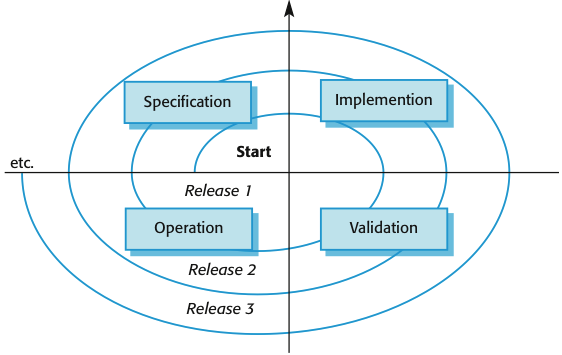
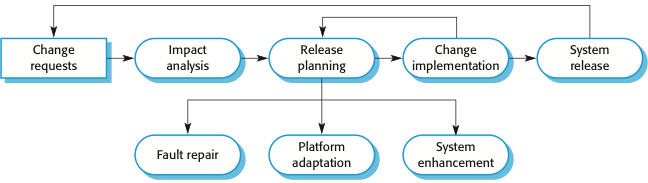
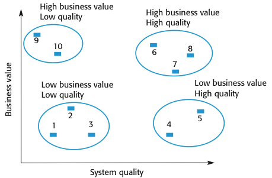

CS 410/510 - Software Engineering
Software Evolution
Reference: Sommerville, Software Engineering, 10 ed., Chapter 9
The big picture
There are many reasons why software change is inevitable:
A key problem for all organizations is implementing and managing change to their existing software systems.
Organizations have huge investments in their software systems - they are critical business assets. To maintain the value of these assets to the business, they must be changed and updated. The majority of the software budget in large companies is devoted to changing and evolving existing software rather than developing new software. A spiral model of development and evolution represents how a software system evolves through a sequence of multiple releases.

Evolution processes
Software evolution processes depend on:
Proposals for change are the driver for system evolution. These should be linked with components that are affected by the change, thus allowing the cost and impact of the change to be estimated. Change identification and evolution continues throughout the system lifetime.

Change implementation can be viewed as an iteration of the development process where the revisions to the system are designed, implemented and tested. A critical difference is that the first stage of change implementation may involve program understanding, especially if the original system developers are not responsible for the change implementation. During the program understanding phase, you have to understand how the program is structured, how it delivers functionality and how the proposed change might affect the program.
Agile methods are based on incremental development so the transition from development to evolution is a seamless one. Evolution is simply a continuation of the development process based on frequent system releases. Automated regression testing is particularly valuable when changes are made to a system. Changes may be expressed as additional user stories.
Program evolution dynamics
Program evolution dynamics is the study of the processes of system change. The system requirements are likely to change while the system is being developed because the environment is changing, therefore a delivered system won't meet its requirements. Systems are tightly coupled with their environment. When a system is installed in an environment it changes that environment and therefore changes the system requirements. Systems MUST be changed if they are to remain useful in an environment.
After several major empirical studies, Lehman and Belady proposed that there were a number of 'laws' which apply to all systems as they evolved. There are sensible observations rather than laws. They are applicable to large systems developed by large organizations.
| Law | Description |
| Continuing change | A program that is used in a real-world environment must necessarily change, or else become progressively less useful in that environment. |
| Increasing complexity | As an evolving program changes, its structure tends to become more complex. Extra resources must be devoted to preserving and simplifying the structure. |
| Large program evolution | Program evolution is a self-regulating process. System attributes such as size, time between releases, and the number of reported errors is approximately invariant for each system release. |
| Organizational stability | Over a program's lifetime, its rate of development is approximately constant and independent of the resources devoted to system development. |
| Conservation of familiarity | Over the lifetime of a system, the incremental change in each release is approximately constant. |
| Continuing growth | The functionality offered by systems has to continually increase to maintain user satisfaction. |
| Declining quality | The quality of systems will decline unless they are modified to reflect changes in their operational environment. |
| Feedback system | Evolution processes incorporate multi agent, multi loop feedback systems and you have to treat them as feedback systems to achieve significant product improvement. |
Software maintenance
Software maintenance focuses on modifying a program after it has been put into use. The term is mostly used for changing custom software. Generic software products are said to evolve to create new versions. Maintenance does not normally involve major changes to the system's architecture. Changes are implemented by modifying existing components and adding new components to the system.
Types of software maintenance include:
Maintenance costs are usually greater than development costs (2x to 100x depending on the application). Costs are affected by both technical and non-technical factors; they tend to increase as software is maintained. Maintenance corrupts the software structure making further maintenance more difficult. Aging software can have high support costs (e.g. old languages, compilers etc.).
Maintenance cost factors include:
Maintenance prediction is concerned with assessing which parts of the system may cause problems and have high maintenance costs. Predicting the number of changes requires and understanding of the relationships between a system and its environment. Tightly coupled systems require changes whenever the environment is changed. Factors influencing this relationship are:
Predictions of maintainability can be made by assessing the complexity of system components. Studies have shown that most maintenance effort is spent on a relatively small number of system components. Complexity depends on:
Process metrics may be used to assess maintainability; if any or all of these is increasing, this may indicate a decline in maintainability:
System reengineering refers to restructuring or rewriting part or all of a legacy system without changing its functionality. It is applicable where some but not all sub-systems of a larger system require frequent maintenance. Reengineering involves adding effort to make them easier to maintain. The system may be restructured and re-documented. Advantages of reengineering include:
Reengineering process activities include:
Refactoring is the process of making improvements to a program to slow down degradation through change. You can think of refactoring as 'preventative maintenance' that reduces the problems of future change. Refactoring involves modifying a program to improve its structure, reduce its complexity or make it easier to understand. When you refactor a program, you should not add functionality but rather concentrate on program improvement. Reengineering takes place after a system has been maintained for some time and maintenance costs are increasing. You use automated tools to process and reengineer a legacy system to create a new system that is more maintainable. Refactoring is a continuous process of improvement throughout the development and evolution process. It is intended to avoid the structure and code degradation that increases the costs and difficulties of maintaining a system.
'Bad smells' of code are stereotypical situations in which the code of a program can be improved through refactoring:
Legacy system management
Organizations that rely on legacy systems must choose a strategy for evolving these systems. The chosen strategy should depend on the system quality and its business value:
